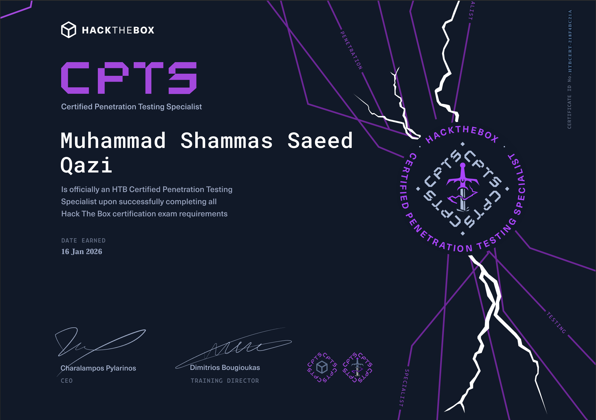
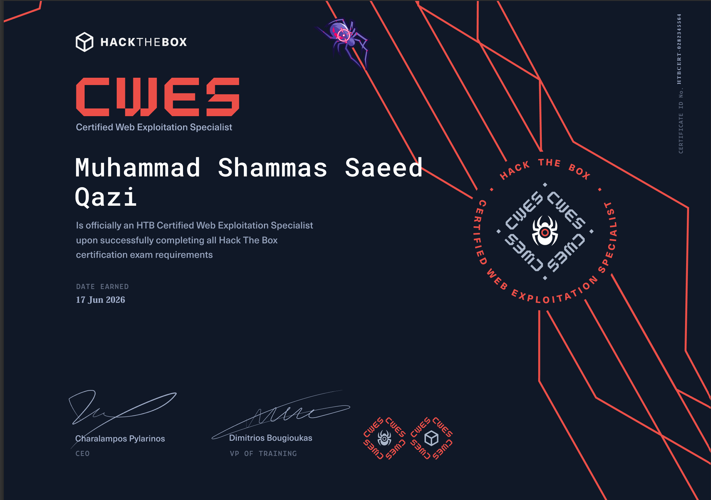

STATUS: OPERATIONAL
Role: Security Engineer
Primary: Offensive Security
Expanding: AI Security + Kubernetes
Developing: Automation + Research
Building: Public Projects + Writeups
Objective: Understand Systems. Break Assumptions.
Condition: Always Curious
> cat about_me.txt
I am a Security Engineer driven by curiosity around how systems work, how they fail, and how they can be made more resilient. What started as understanding technology gradually evolved into offensive security, security engineering, automation, and practical security research.
Professionally, I work across security operations, vulnerability management, security monitoring, web application security, penetration testing, incident response, and security automation. My work also extends into application security, secure code reviews, and assessing security risks in AI-powered applications and agent-based workflows.
I am expanding my expertise in CI/CD security, DevSecOps, cloud security, and integrating security into modern software development and deployment workflows. I enjoy turning complex security challenges into repeatable processes, practical solutions, and meaningful improvements.
Outside of work, I continue developing through hands-on labs, technical writeups, continuous learning, and building projects that strengthen both technical depth and problem-solving ability. Beyond cybersecurity, years of competing in Mixed Martial Arts at the national level from 2016 to 2022 shaped the discipline, resilience, and mindset I bring into both work and personal growth.
My current focus is advancing deeper into offensive security, AI agent security, cloud-native security, CI/CD pipeline security, and modern attack methodologies while contributing back to the cybersecurity community through research, tooling, and shared knowledge.
> ls portfolio/
Exploring offensive security, defensive operations, application security, AI security, cloud infrastructure, and security automation through practical engineering, research, and continuous learning.
Application Security & Secure Code Review
Performing application security assessments, manual source code reviews, and secure design evaluations to identify vulnerabilities, insecure coding patterns, authentication and authorization weaknesses, and business logic flaws. Supporting remediation through developer collaboration, security requirements, and OWASP-aligned practices.
Web Application & API Penetration Testing
Assessing web applications and APIs for authentication weaknesses, authorization bypasses, injection flaws, SSRF, XXE, XSS, business logic vulnerabilities, and insecure configurations.
Active Directory & Infrastructure Penetration Testing
Assessing Active Directory and network environments through enumeration, privilege escalation, ACL abuse, Kerberos attacks, credential exposure, lateral movement, and attack path analysis.
AI Agent Security & LLM Security
Assessing security risks in AI-powered applications and autonomous agent workflows, including prompt injection, tool misuse, excessive agency, sensitive information exposure, insecure integrations, and trust boundary violations. Exploring adversarial testing and security controls for LLM-based systems and AI agents.
Red Teaming & Purple Teaming
Developing adversary simulation capabilities through attack chain development, offensive techniques, and realistic security exercises, while validating detection coverage and strengthening defensive controls.
CI/CD Security & DevSecOps
Building expertise in securing software delivery pipelines through automated security testing, SAST, DAST, dependency scanning, secret detection, container image scanning, and secure deployment practices.
Cloud, Kubernetes & Container Security
Expanding into cloud-native security, including cloud IAM, infrastructure misconfigurations, container security, Kubernetes hardening, workload protection, and secure cloud architecture.
SOC, SIEM Engineering & Incident Response
Engineering security monitoring through custom detections, log correlation, alert tuning, and SIEM workflows, while investigating security events, analyzing evidence, and coordinating incident containment and remediation.
Security Automation & Tool Development
Building Python-based security tools, scripts, and repeatable workflows to improve vulnerability management, detection engineering, security reporting, incident investigation, and operational efficiency.
Security Engineering & Infrastructure Hardening
Strengthening applications, endpoints, operating systems, databases, and network infrastructure through secure configurations, vulnerability management, security baselines, architecture reviews, and control validation.
> certs --show
Professional certifications validating practical, hands-on offensive security expertise.

CPTS
Certified Penetration Testing Specialist
Hack The Box

CWES
Certified Web Exploitation Specialist
Hack The Box
> decode passions/
Personal archive encrypted.
Outside cybersecurity, I enjoy pushing myself through fitness and maintaining a disciplined lifestyle. I trained and competed in Mixed Martial Arts from 2016 to 2022, representing at the national level, which shaped my mindset around consistency, resilience, and performing under pressure.
I also enjoy exploring human performance, studying mythology and ancient history, creating content, gaming, and constantly seeking experiences that challenge me and expand my perspective.
> ls research_logs/
Research archive locked.
A growing collection of Hack The Box machine writeups, lab walkthroughs, technical research, security experiments, and articles documenting practical lessons learned throughout my cybersecurity journey.
I use technical writing to document attack methodologies, share knowledge, and strengthen my understanding of offensive security and security engineering.
> roadmap --future
Future development roadmap encrypted.
My future plans include continuing to sharpen my offensive security expertise through advanced labs, real-world research, and adversarial testing, while expanding deeper into AI security, cloud security, DevSecOps, and CI/CD pipeline security.
I also aim to develop strong practical expertise in Kubernetes, containerization, and cloud-native security, working toward the Certified Kubernetes Administrator (CKA) and Certified Kubernetes Security Specialist (CKS) certifications.
Alongside this, I plan to build public security tools, automation frameworks, and practical security projects, publish more technical writeups, and continue evolving as a well-rounded Security Engineer capable of both breaking and securing modern systems.